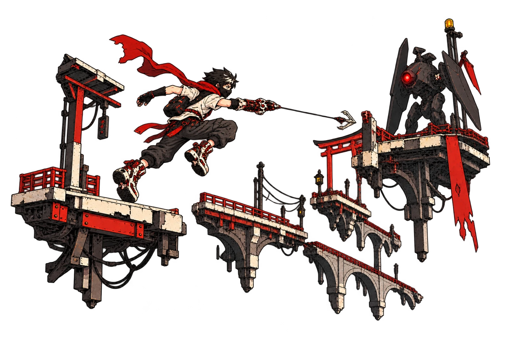
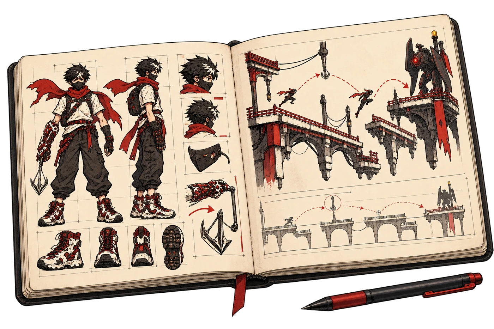
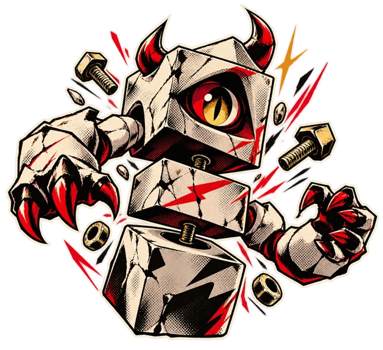
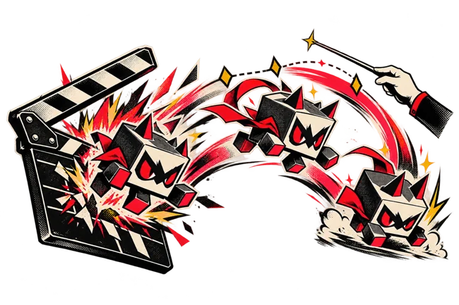
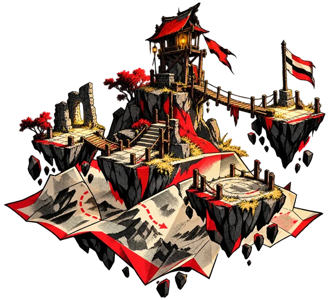
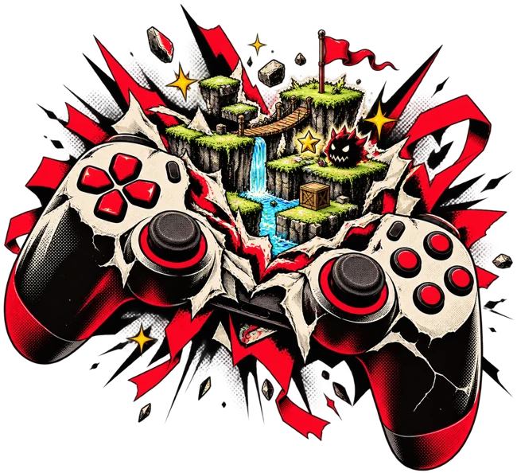

ดูเทรลเลอร์ ↗
ดูเทรลเลอร์ ↗SEAL STUDIO
Starways Super Express คอร์สสร้างเกม 1 เดือน
เปลี่ยนไอเดียในหัว ให้เป็นเกมที่กดเล่นได้
เริ่มจาก Unity พื้นฐาน แล้วลงมือสร้างผ่าน 5 Milestone
พร้อม Quest และกิลด์ที่ไปด้วยกัน
Unity + AI • 5 Milestone • 1 เดือน
ดูเกมจากคนใน Hamster Hub
คนละความสนใจ คนละสไตล์
แต่ทุกเกมเริ่มจากการลงมือสร้าง
ดูเทรลเลอร์ ↗SEAL STUDIO
 ดูเทรลเลอร์ ↗
ดูเทรลเลอร์ ↗RE_SLASH
 ดูเทรลเลอร์ ↗
ดูเทรลเลอร์ ↗PXCoN
ผลงานหมุนอัตโนมัติ · ลากเพื่อเลือก · กดภาพตรงกลางเพื่อดูคลิป
คิดตัวละคร ออกแบบวิธีเล่น แล้วสร้างโลกให้มัน
ลองให้คนอื่นเล่น ฟังสิ่งที่เขาเจอ
แล้วกลับมาทำให้เกมของเราดีขึ้น


เริ่มจากไอเดียและกติกาของเรา
เส้นทางเรียนใน 1 เดือน
แตะภาพเพื่อดูว่าแต่ละช่วงได้ลงมือทำอะไร

สร้างวัตถุ ใส่วัสดุ และทำให้มีการชน
เปิดรายละเอียด ↗
สั่งการเคลื่อนไหวและเหตุการณ์ในฉาก
เปิดรายละเอียด ↗
จัดฉาก วัสดุ แสง และบรรยากาศ
เปิดรายละเอียด ↗
เชื่อมตัวละครกับเหตุการณ์ในเกม
เปิดรายละเอียด ↗
ใช้ Antigravity ร่วมกับ Unity
เปิดรายละเอียด ↗5 Milestone ต่อเนื่องภายใน 1 เดือน · ลำดับการเรียน ไม่ใช่การแบ่งเป็น 5 สัปดาห์
วางแผนงาน รับความท้าทาย แล้วนำสิ่งที่เรียน
กลับมาใช้กับเกมของตัวเองในทุกสัปดาห์

วางแผนสิ่งที่จะส่ง เลือกระดับความยาก และรับ Reward จากความก้าวหน้า
ระบบ Quest เป็นอย่างไร ↗
ร่วมทีม ชิงทรัพยากร พัฒนา Pet และแข่ง Weekly Boss ไปด้วยกัน
รู้จักกิลด์และ Weekly Boss ↗
วันพุธอัปเดต Quest และ Weekly Boss เสาร์–อาทิตย์มี Special Content
ดูกิจกรรมและจังหวะการเรียน ↗เส้นทางเริ่มที่ Unity พื้นฐาน ตั้งแต่สร้างโปรเจกต์ วัตถุ และวัสดุ คุยกับทีมเรื่องพื้นฐานและความสนใจเพื่อดูความเหมาะสมก่อนสมัคร
เรียนผ่าน 5 Milestone: Monsta, Timeline, Map, Player และ Game พร้อม Quest กิลด์ กิจกรรม และการใช้ AI ช่วยสร้างระบบ เปิดรายละเอียดแต่ละช่วงได้ด้านบน
วันพุธมี Update Quest และ Weekly Boss เสาร์–อาทิตย์มี Special Content ติดต่อทีมเพื่อยืนยันเวลาเรียน รุ่นที่เปิด ค่าเรียน อุปกรณ์ และเงื่อนไขการสมัคร
มีหน้าแยกให้ทำความเข้าใจเป้าหมายการเรียนและคำถามก่อนตัดสินใจ เปิดหน้าสำหรับผู้ปกครอง ↗
เริ่มลงมือกับ Starways Super Express
คอร์ส Unity + AI ผ่าน 5 Milestone ใน 1 เดือน
คุยกับทีมเรื่องพื้นฐาน รุ่นเรียน และค่าเรียนก่อนสมัคร

เริ่มโปรเจกต์ แล้วสร้างตัวละครจากรูปทรงพื้นฐาน
Monsta ที่ประกอบขึ้นเอง พร้อม Rigidbody และ Collider
ทำให้สิ่งที่สร้างเริ่มเคลื่อนไหวตามลำดับ
Timeline ของตัวเองที่ควบคุมการแสดงและการเคลื่อนไหว
สร้างพื้นที่ให้ตัวละครและเรื่องราวของเกม
Map ที่จัดวางวัตถุ วัสดุ และแสงของตัวเอง
ให้ผู้เล่นกระตุ้นเหตุการณ์ที่ออกแบบไว้
Player ที่ใช้ Trigger เรียกเหตุการณ์และ Timeline
ใช้ AI ร่วมกับ Unity แล้วรวมสิ่งที่เรียนเป็นผลงาน
เกมของตัวเองจากองค์ประกอบที่สร้างตลอดคอร์ส
วางแผนสิ่งที่จะส่งใน Checkpoint ถัดไป แล้วเลือกความท้าทายที่พร้อมรับ
Quest คือสิ่งที่ตกลงว่าจะทำให้ถึงก่อน Checkpoint ถัดไป ยิ่งมี Progress มาก ยิ่งได้รับ Reward มาก และหากทำได้เกินกว่าที่ตกลงไว้จะมี Bonus
สองกิลด์ใช้ความก้าวหน้าของสมาชิกมาช่วยพัฒนากิลด์และ Pet
พระราชา Patrix กำลังมองหากิลด์ที่แข็งแกร่งที่สุดเพื่อสนับสนุน และจะเลือกกิลด์ใหม่ทุกสัปดาห์
กิลด์ที่ชนะ Weekly Boss จะได้ Extra Quest เพิ่มใน Shop
อัปเดตงาน รับ Quest และเจอเนื้อหาพิเศษระหว่างเส้นทาง
สอบถามเวลาเรียนและรายละเอียดของรุ่นกับทีมก่อนสมัคร